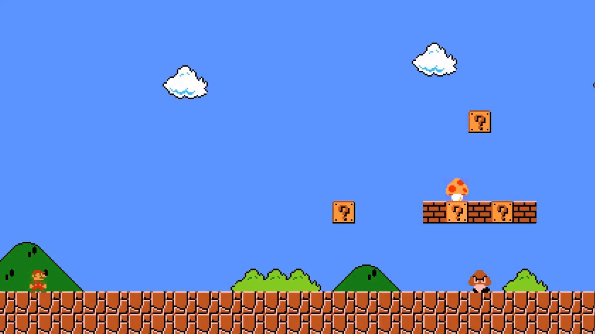
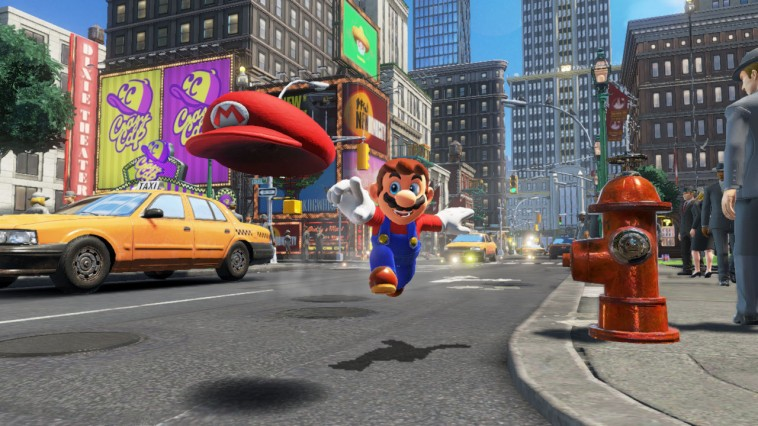
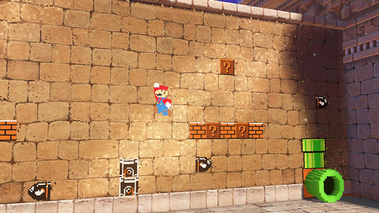

Pixelated
Raster
Graphics
in gaming
80's arcade style graphics are the "new" hip way to design video game art and it is gaining popularity in the past few years.

Super Mario Bros
Using sprites and low resolution graphics, pixel art in past were comon and all we had, low-powered hardware could only render that much detal.

Super Mario Odyssey
Nowadays we have super-powered machines that ovecome these others by over 2666 times (when comparing the nintendo switch and the nintendo snes) that can render almost anything.

Super Mario Odyssey (8-bit Pipes)